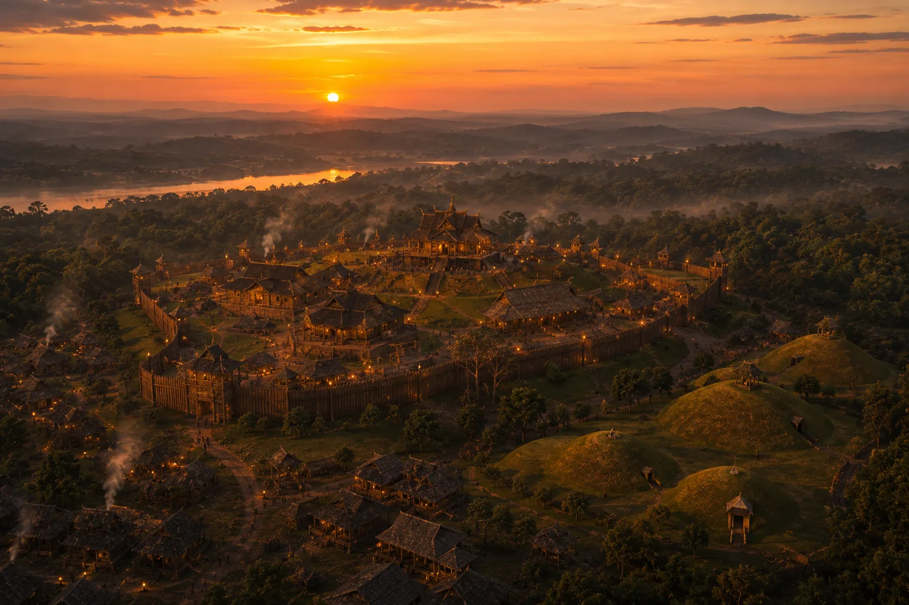

The Sacred Promontory of Charaideo
c. 1260s · The coming of Sukaphaa

The sacred royal compound and ancestral temples at Charaideo, the spiritual center and eternal resting place of Ahom royalty.
Sources have not yet been catalogued for this record.
People: Chaolung Sukaphaa
Open this scene in the interactive archive · Follow this event on MAP